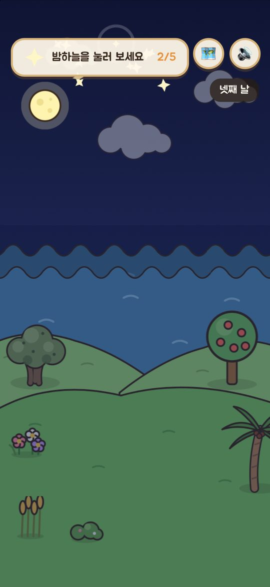
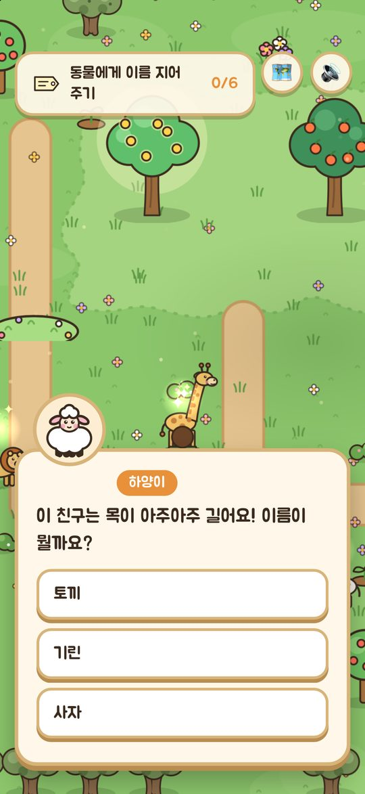
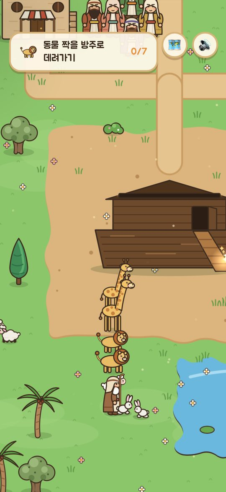
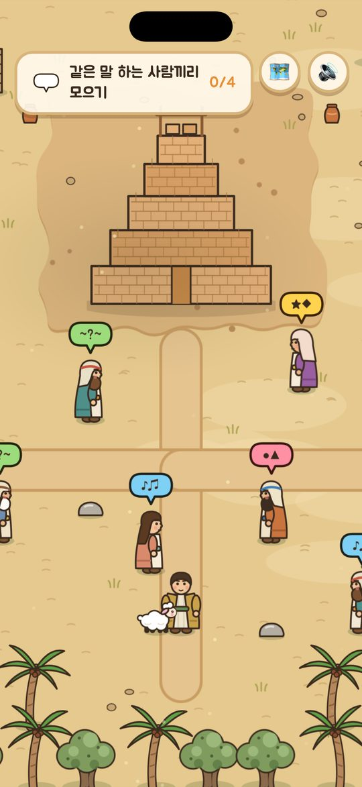
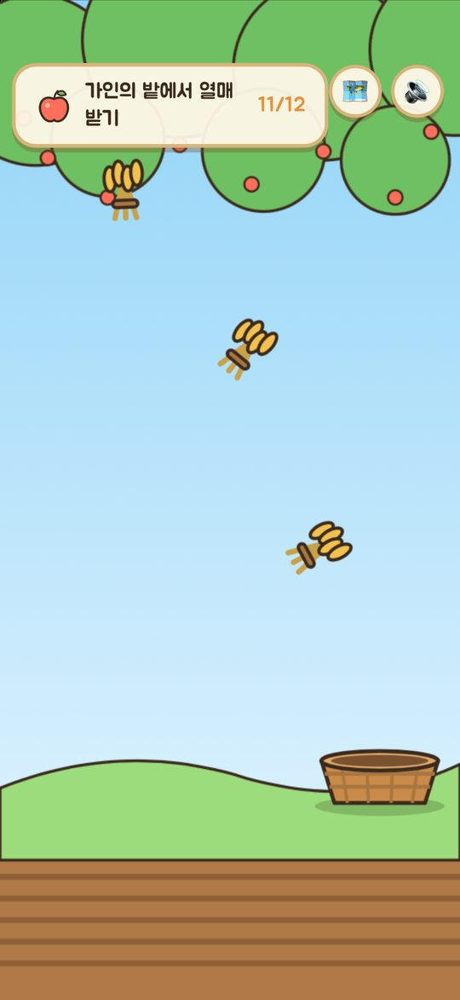

하하하
바이블 탐험
하양이와 함께 떠나는 성경 여행
App Store 출시 준비 중 · 무료
성경 속을 직접 걸어요
「하하하 바이블 탐험」은 어린이가 성경 이야기를 읽기만 하는 것이 아니라, 어린 양 하양이와 함께 이야기 속을 직접 걷고, 돕고, 고르며 경험하도록 만든 게임이에요.







시즌 1 · 태초 (창세기 1–11장)
- 1. 천지창조화면을 눌러 일곱 날 동안 하나님이 만드신 것을 보아요.
창세기 1:1–2:3 - 2. 에덴동산동산을 가꾸고 동물들에게 이름을 지어 줘요.
창세기 2장 - 3. 선악과와 첫 약속뱀의 거짓말, 그리고 하나님의 첫 구원 약속.
창세기 3장 - 4. 가인과 아벨양을 치고 열매를 거두며 화난 마음을 다스려요.
창세기 4장 - 5. 노아의 방주방주를 짓고 동물들을 태우고 무지개 약속을 만나요.
창세기 6–9장 - 6. 바벨탑하늘까지 닿는 탑, 그리고 뒤섞인 말.
창세기 11:1–9
이런 점이 좋아요
- 하나님의 말씀에는 성경 본문 위치(예: 창세기 1장 3절)를 함께 보여 줘요.
- 이야기를 끝까지 보면 개역한글 말씀 카드와 쉬운 풀이를 모아요.
- 창조 놀이, 열매 받기, 탑 쌓기, 짝 찾기 같은 놀이가 이야기 곳곳에 있어요.
- 글자는 화면을 눌러야 넘어가서 천천히 읽을 수 있어요.
- 하나님은 사람 모습으로 그리지 않고 빛으로 표현했어요. 무서운 장면 없이 어린이 눈높이로 만들었어요.
부모님과 선생님께
앱 안의 "부모님 · 선생님" 화면(어른 확인 후 열림)에서 이야기마다 본문, 핵심 내용, 아이와 나눌 질문 두 가지를 볼 수 있어요. 주일학교 공과와 함께 활용해 보세요.
- 광고가 없어요.
- 개인정보를 모으지 않아요. (개인정보 처리방침)
- 인터넷 없이도 할 수 있어요.